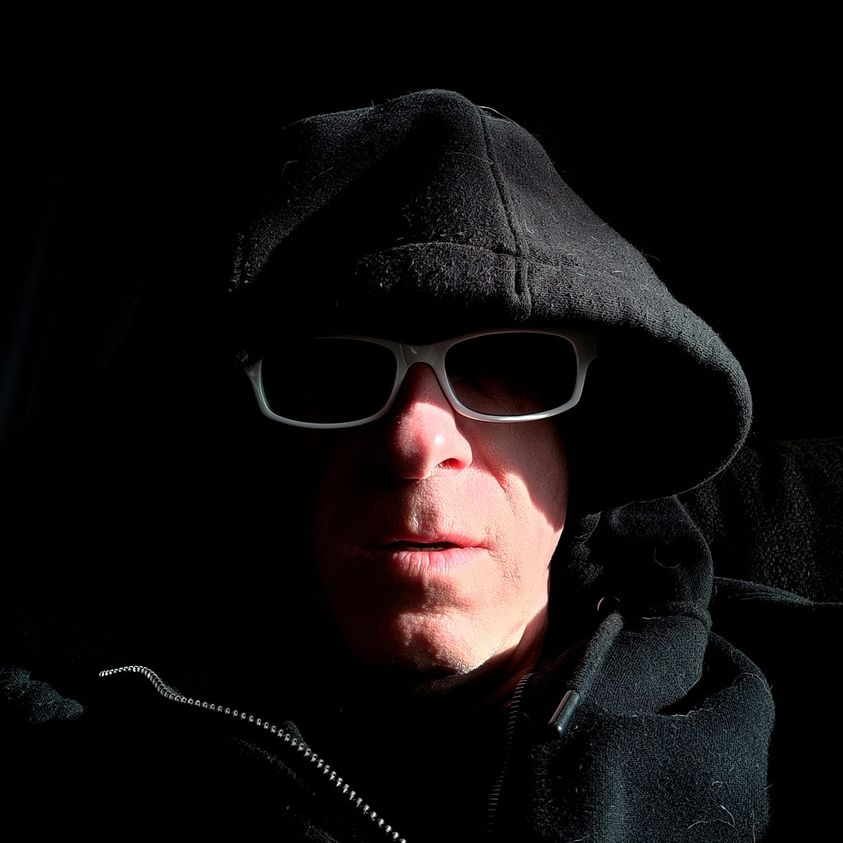

Mobile uploads
My very enlightened friend, @[5523158:2048:Holly White] , likes to say that I look like Emperor Palpatine from Star Wars when I wear my hood like this. She always says it with a small smile.
There is no doubt, the Dark Side is within me and it's strong. In fact, I can feel it grow as I develop the Light Side of my force. Balancing the forces is a real thing. Taoism and Zoroastrianism are 2 beliefs that work in this practice.
I have spent most of my adult life fighting the power of darkness. Alcoholism, obesity, obsession, passion, desire, anger, hatred. (It probably manifests itself the most right now in wanting to overeat. Eating calms me. It's a drug that levels my emotions.)
I have found that I can channel these dark emotions into good. Like I sometimes furiously throw trash in my truck.
I see zero evidence that darkness will ever disappear. It lives in the heart of life. If darkness is a given then I can't see how we are just supposed to treat it like an unwanted enemy. Because truthfully, darkness has power and strength and value. For me, it has become a friend that I see coming. I watch it rise and fall within myself and the world. And instead of trying to just stand in it's way and yell it into submission, I go tell it to clean up trash (which is sometimes actual trash and sometimes it's corrupt, grotesque systems that love to destroy weak individuals in the name of "The Greater Good.)